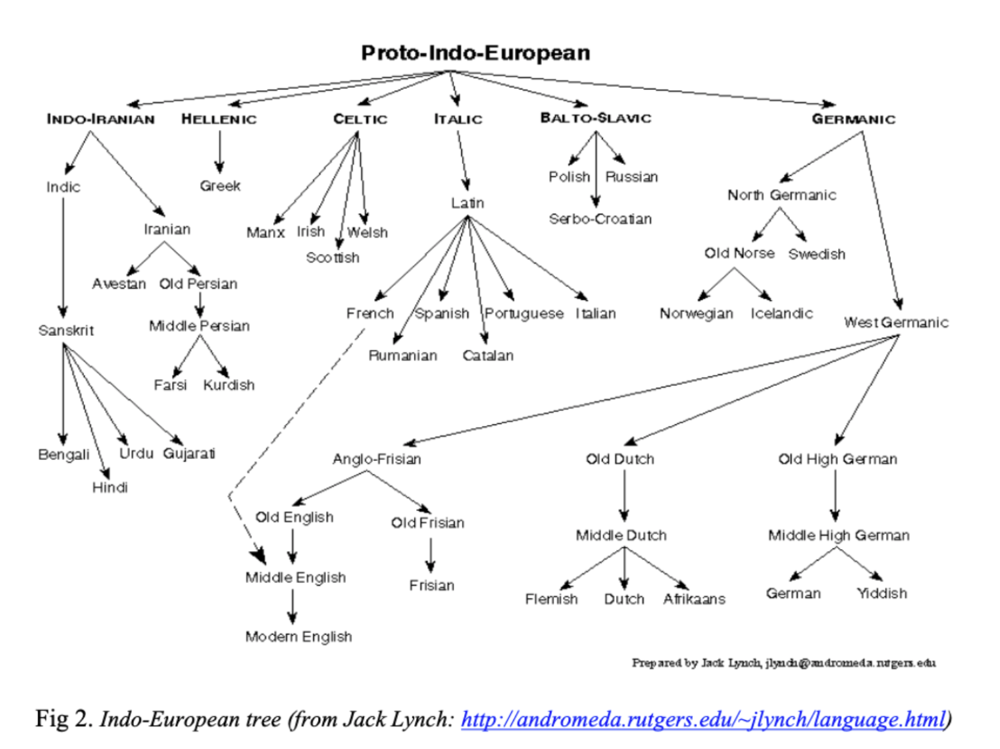

A Brief History of the English Language
English is a West Germanic Language, belonging to a group called the Indo-European Family Language. The original home of this is thought to have been somewhere between the Caspian and Black Sea around 6000 years ago - although this is debated!
There are no written records of this language, but we can make inferences about what words may have sounded/looked like by looking at cognates of the languages that descend from it. Cognates are words in different language that descend from the same root word, and therefore look and sound similar - with this information, linguists can make a decent guess at what the word may have looked like in its parent or predecessor language.
Greek: Tris
Latin: Tres
Gothic: Thri
English: Three
Cognates can also show systematic sound changes that occur as language develops - like Latin’s “Pater” to English’s “Father”.

Proto-Indo-European developed into many branches: Germanic being one of them. There are 3 sub-branches of Germanic: East, North and West. East Germanic developed into Gothic (with no modern languages developed from it), North Germanic (which developed into the modern Scandinavian languages like Swedish and Danish) and West Germanic (which is the ancestor of German, Dutch. Flemish and English!)
The development of English can be categorised into multiple stages: Old English, Middle English, and Modern English.
Old English
In around 500 BCE, Britain was invaded by Celtic tribes. In 43 CE, Britain was invaded by Emperor Claudius and became part of the Roman Empire. After the empire collapsed, the remaining Celts sought help defending the land against the Scots and Picts from 3 Germanic tribes: the Angles, the Saxons and the Jutes. The three tribes not only conquered the Scots but took the island for themselves - by 600AD, Englaland, and its language, English, came into existence. Old English vocabulary was influenced by multiple languages, such as Celtic (predominantly taking place names like London, Kent, and Thames), Scandinavian, and Latin.
Middle English
The Normans, of the Norman Invasion of England in 1066, spoke Norman French (french influenced by a Germanic Dialect.) Common people spoke English, while the Aristocrats spoke Norman French. The resulting combination of these two languages is called Middle English. At the end of the 14th century, the Normans decide to adopt English as their official language and open Parliament in Westminster, London - resulting in the dominance of the London dialect as the standard spoken and written language.
Modern English
In 1476, the printing press was invented by Caxton. Literacy became more common, and in turn, English books. Printing houses were most commonly found in London, resulting in a fixed grammar and standardised spelling. The first dictionary was published in 1604. The Renaissance, a time known for rapid learning and discovery, resulted in even more words taken from Latin and Greek to describe new concepts and ideas - words like hypothermia!